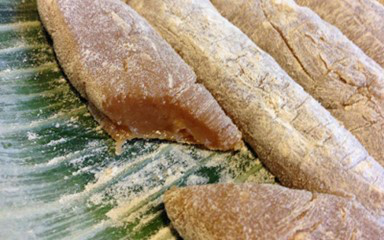
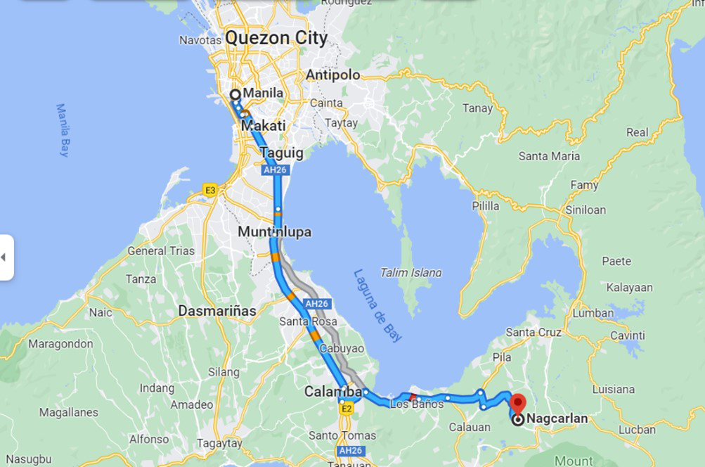
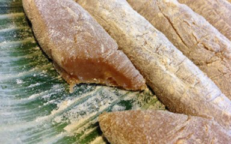
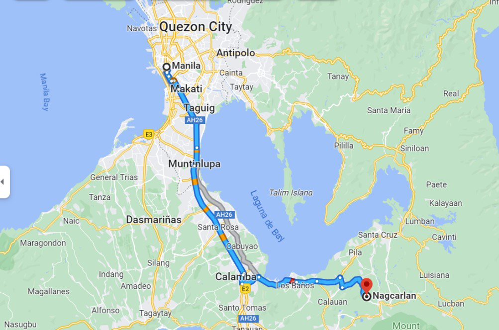

Visit
Nagcarlan,
Nagcarlan, officially the Municipality of Nagcarlan (Tagalog: Bayan ng Nagcarlan), is a 2nd class municipality in the province of Laguna, Philippines. According to the 2020 census, it has a population of 64,866 people.
According to the origin, the name Nagcarlan came from the name of a famous rich and generous woman by Ana Kalang or Ana Panalangin was a native woman who was known for her golden salakot and cane which she always carried when walking around town. She was well-respected by the townfolk not just for her wealth but also for the help she extends to those in need. One day, a Spaniard came to her house and upon looking out of the window, he saw branches swaying and hitting one another, and so he asked what was going on. Ana Kalang answered and said "nagkakalang sila". The word was repeatedly mispronounced by the Spaniards until it became Nagcarlan, which is now the name of the town.
Read More
Underground
Cemetery,
The Nagcarlan Underground Cemetery is a national historical landmark and museum in Barangay Bambang, Nagcarlan, Laguna supervised by the National Historical Commission of the Philippines. It was built in 1845 under the supervision of Franciscan priest, Fr. Vicente Velloc supervised the establishment of a cemetery in Nagcarlan in 1845 below Mt. San Cristobal.
Established: 1845
Location: Brgy. Bambang, Nagcarlan, Laguna
Country: Philippines
Coordinates: 14°07′53″N 121°24′53″E
Type: Roman Catholic
Style: Baroque
Owned by: Roman Catholic Diocese of San Pablo
Size: 1 hectare
No. of graves: 276 Niches
San Bartolome Apostol
Parish Church,
The San Bartolome Apostol Parish Church is a Roman Catholic church in Nagcarlan, Laguna, Philippines. Its titular saint is Bartholomew, and its feast day is celebrated every August 24.
Address: 4CP8+MW9, Nagcarlan, Laguna, Nagcarlan
Phone: (049563) 1006
Architectural style: Baroque architecture
Priest(s): Eduardo Arupo
Diocese: San Pablo
Function: Church
Materials: Volcanic tuff, brick, and other native material
Archdiocese: Manila
Bunga
Falls,
Bunga Falls in Nagcarlan, Laguna is a twin falls divided into two similar-looking cascades with a protruding rock in the middle. The falls are beautifully symmetric and have a deep plunge pool perfect for cliff jumpers.
The falls used to be a local test of the “manliness” of the boys to be able to jump from the falls to the deep basin. Local folklore also suggests there are creatures under the pool that snatch those deemed undeserving. The deep pool is estimated to be at 20 feet.
HOW TO GET THERE?
By public transportation: Take a bus from Manila to Lucena City. Ask the conductor to drop you off in San Pablo City. From there you can take a jeepney to Nagcarlan city proper. You may take a motorcycle to Bunga Falls, which is not far away.
By car: Navigate using Waze or Google / Apple Maps and key in Bunga Falls as your destination. There are plenty of parking spaces available.
ACCOMMODATION:
Entrance Fee– PHP 20 per person
Cottage– PHP 250
Life Vest– PHP 50
Yambo
Lake,
The geologic explanation of the lakes’ origins is equally fascinating. The lakes, scientists say, were craters of ancient volcanoes. They form part of what is known as the “Laguna Volcanic Field” – which includes other mountains in the area such as Mt. Kalisungan, Mt. Atimla, Mt. Banahaw, and Mt. Mabilog. Mount Makiling is its most prominent volcanic feature.
HOW TO GET THERE?
From San Pablo City– Ride a Jeep to Nagcarlan, the terminal is beside the Fire Station near the Cathedral. The fare up to Nagcarlan town proper is Php 25. When you arrive at the town market, ride a tricycle to Brgy. Sulsuguin, the fare ranges from Php 50 to Php 100 per trip.
ACCOMMODATION:
Entrance Fee– None, but you can donate any amount to the guides.
Bamboo Raft Rental– Php 500, additional if with food and drinks
Overnight Camp– Php 100 per head
Delicacies and
Restaurant,
• Espasol
- Espasol is also known as rice pudding. It was made with rice flour, coconut strips, and coconut milk, shaped in cylinders. They use toasted flour, then roll the Espasol into it.
• AJ’s Cafe Cenaunang Balai
- “Peaceful Ambiance where you can enjoy Good and Delicious Food.”
- AJ’s Cafe Cenaunang Balai was established last 2020. It is located at Mabini St, Poblacion 1, Nagcarlan, Laguna. It has a lot of delicious menu and some of it are dinuguan, puto, bagnet and lomi.
• Kena’an Cafe and Restaurant
• “Enjoy the taste of Fine Cuisine and Pinoy Dish at its best.” As its motto said, the restaurant will surely offer us some unique dishes for our hungry stomachs.
• The Kena’an Cafe and Restaurant is a food establishment built by the year 2011 and is located at the town proper of Nagcarlan. The restaurant is only beside the historical Nagcarlan Underground Cemetery, which is why it is perfect for tourists visiting the famous landmark. The place is well known to served many famous personalities and tourists who also visited the Underground Cemetery neighboring it.
• One astounding fact about the restaurant is its name was inspired from the Hebrew word Canaan which means “the land of promise”, which comes from the Bible. The owner, Mr. Manny Valencia, is also the most successful man in Nagcarlan and the owner of the prominent and renowned Joshua’s Meat Products, one of the products of Nagcarlan being exported to many provinces and Metro Manila.
• Eiffel's Sizzlers by Pares ni Jojo
- Eiffel's Sizzlers by Pares ni Jojo is located at Purok 4 Brgy. Silangan Ilaya Nagcarlan, Laguna. Its menu has a lot of choices, it has silog meals, pulutan, budget meals for students and many more.
On Google
Maps,
MANILA
2 hr 7 min (89.1 km)
via S Luzon Expy/Pan-Philippine Hwy/R-3
You have to take Carlos Palanca, C-1, San Marcelino St and San Andres St to S Luzon Expy/Osmeña Hwy/R-3 in San Andres Bukid (17 mins, 4.4km)
then take Metro Manila Skyway, S Luzon Expy/Pan-Philippine Hwy/R-3 and Manila S Rd to Provincial Rd in Laguna (1hr 29mins, 72.4km)
and drive to Calauan - Nagcarlan Rd in Nagcarlan (18mins, 12.3km)
NAGCARLAN, LAGUNA
 


